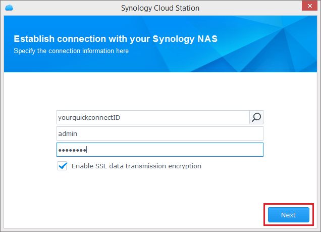

概要
eCore Server 用の Cloud Station は、eCore Server 上のファイルをコンピュータやモバイルデバイス（DS cloud がインストールされていること）などの別のデバイスと同期するためのファイル同期アプリケーションです。eCore Server とコンピュータの両方に Cloud Station をインストールしたら、コンピュータ上の特定のフォルダに保管されたファイルが eCore Server と自動的に同期されます。
1. Cloud Station をインストールする
- [パッケージ センター] を開き、Cloud Station を探したら [インストール] をクリックします。

2. Cloud Station を有効にする
- Cloud Station を起動します。
- ユーザーホーム機能を有効にしていない場合は、有効にするよう要求されます。[OK] をクリックします。
- ユーザー設定ページに転送されます。ユーザーホームを有効にして、[適用] をクリックします。
- Cloud Station に戻ると、これを有効にするよう要求されます。[はい] をクリックしてください。
- [権限] を選択し、Cloud Station を使用できるユーザーを指定します。[保存] をクリックします。


3. クライアントをインストールして有効にする
- [Cloud Station] > [概要] を選択し、[コンピュータ] ボタンをクリックします。
- このボタンをクリックすると、お使いのオペレーティング システム用の Cloud Station がダウンロードされます（Cloud Station は Synology ダウンロードセンターからもダウンロードできます）。
- コンピュータでインストーラを起動し、画面の指示に従ってください。
- インストール後は、コンピュータで Cloud Station を実行します。[今すぐスタート] をクリックします。
- Cloud Station を起動している eCore Server のアドレス（または QuickConnect ID）、ユーザー名、パスワードを入力します。右側にある検索アイコンをクリックして、LAN 内の IP を検索します。[次へ] をクリックします。 
- タスクを設定する方法を選択し（ここでは クイックセット アップを選択します）、[次へ] をクリックします。
- [完了] をクリックして、「Cloud Station」フォルダの設定を完了します。
- [今すぐ開く] をクリックすると、「Cloud Station」フォルダが開きます。
- システム トレイに Cloud Station アイコンがあります。
- Cloud Station アイコンをクリックすると、トレイメニューが開きます。ここでは、ファイルの処理状況と状態が表示されます。[メイン アプリ] をクリックすると、Cloud Station が起動します。
- Cloud Station が起動すると、その使い方のヒントが表示されます。右矢印をクリックするとその他のヒントが表示されます。または、[オンライン チュートリアルを読む] をクリックすると、その他の情報が表示されます。ヒントが必要ない場合は、[今後このメッセージを表示しない] をクリックしてください。
- 以上で、Cloud Station で同期タスクを管理できるようになります。


4. データをモバイル デバイスと同期する
DS cloud は、Apple App Store や Google Play Store から無償でダウンロードできます。以下の QR コードをスキャンすると、簡単にダウンロードできます。